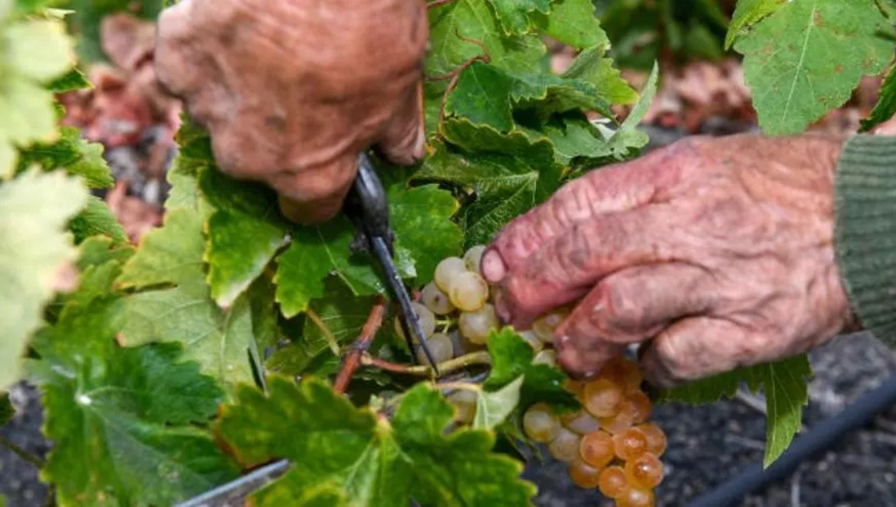
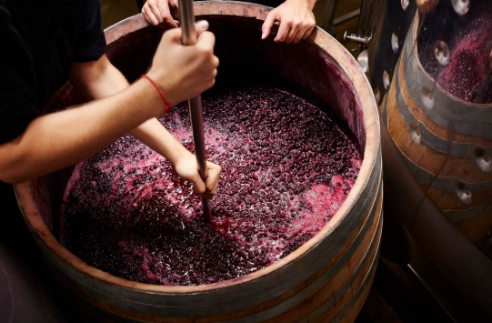
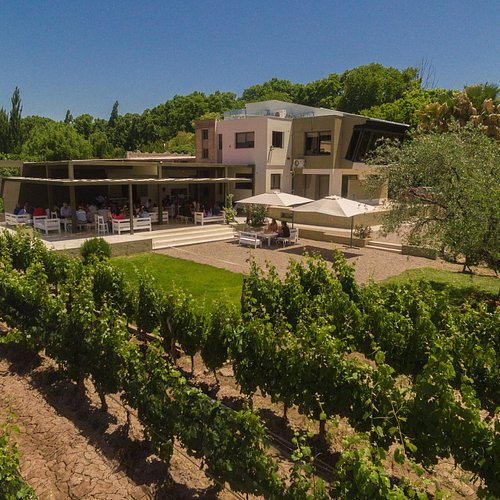

Manos expertas seleccionan con delicadeza uvas, reflejando la tradición y el cuidado artesanal en cada paso del proceso vinícola.

Manos expertas seleccionan con delicadeza uvas, reflejando la tradición y el cuidado artesanal en cada paso del proceso vinícola.

La riqueza del mosto, el contraste de texturas y la interacción entre manos y materia prima evocan la pasión y maestría detrás del arte vinícola.
